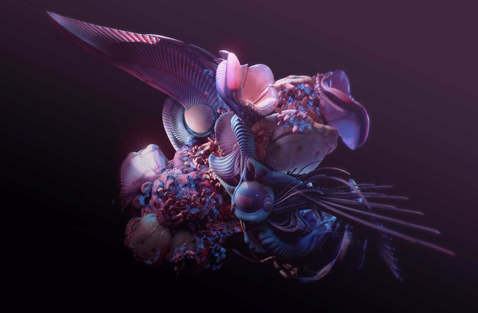
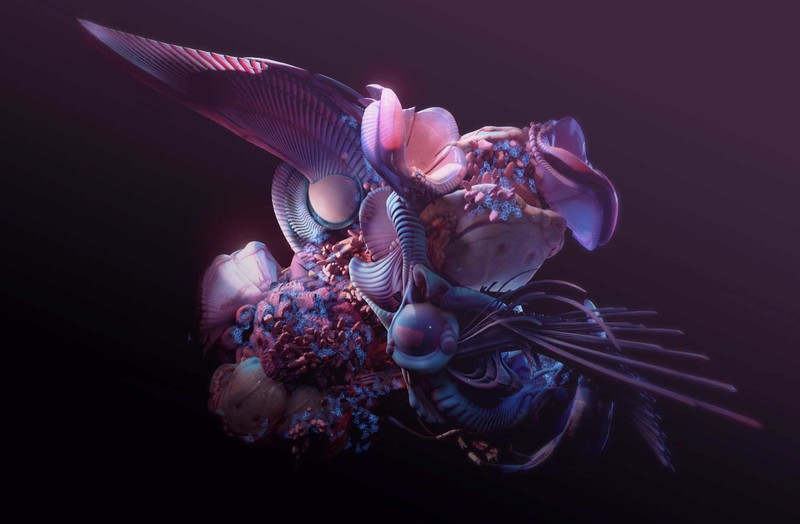
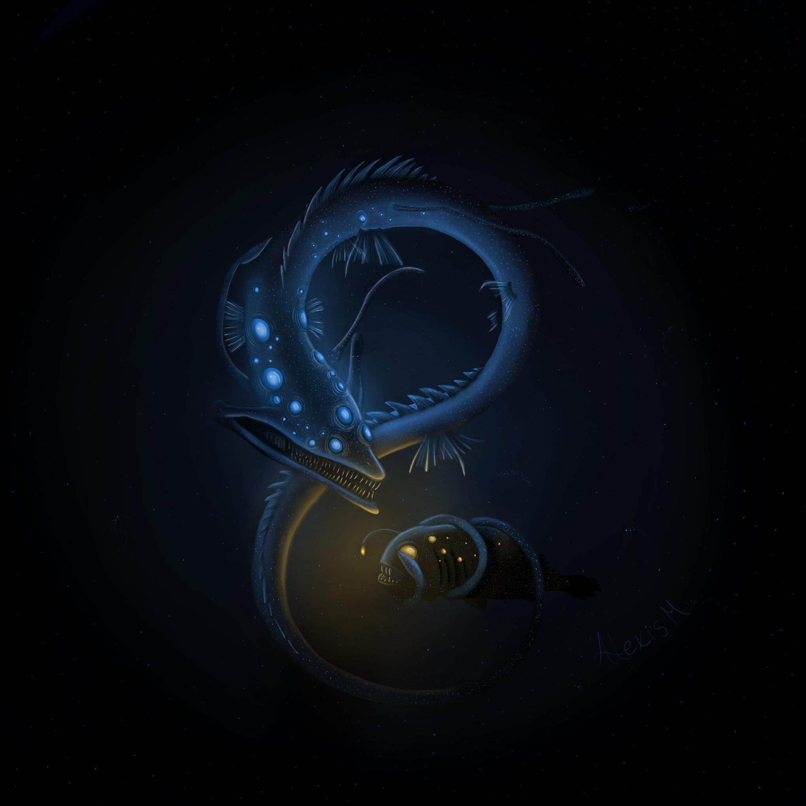
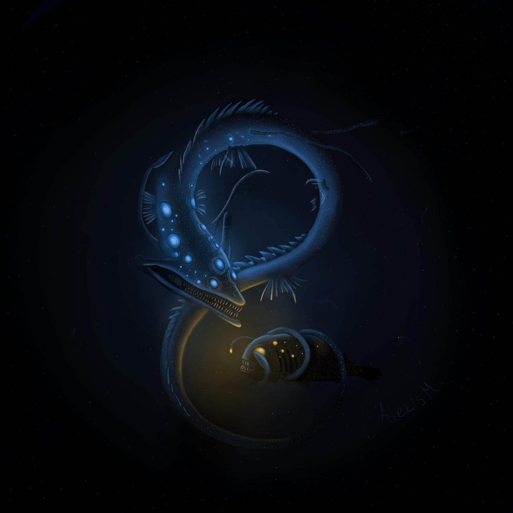
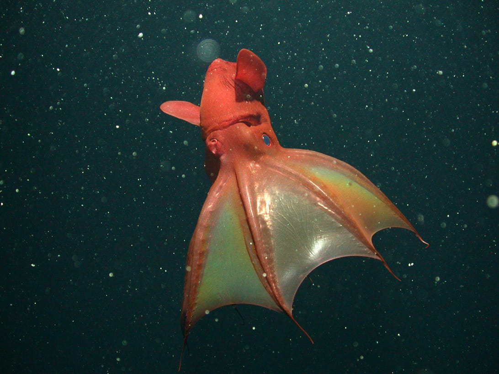
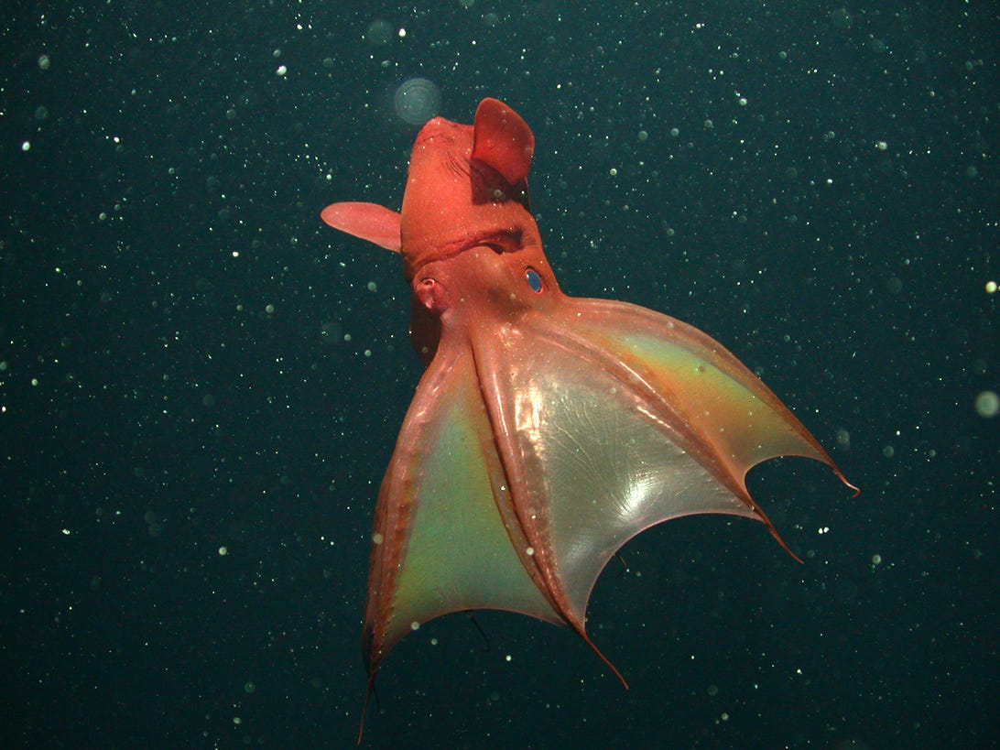

We inhabit time as fish live in water.


Pyritized Ammonite


Jurassic Crinoid Fossil


Slime Mold


Fish Scale Macros


 

Dead Fish in Karman Vortex

 



 


"We fear plurality, diffusion, senseless accident, chaos, we want to transform what we cannot dominate or understand into something reassuring and familiar, into ordinary being, into history, art, religion, science."
"The world is given me, i.e. my will enters into the world completely from outside as into something that is already there... That is why we have the feeling of being dependent on an alien will. However this may be, at any rate we are in a certain sense dependent, and what we are dependent on we can call God. In this sense God would simply be fate, or, what is the same thing: the world, which is independent of our will. I can make myself independent of fate. There are two god heads: the world and my independent I. I am either happy or unhappy, that is all. It can be said: good or evil do not exist."
"The Will to Live, and the world as we know and experience it as a causally determined construct of phenomena brought about by (us) subjects through our perceptions, that is objectified ideas of the Will. The Will to Live, to exist, takes care of continuation of species and general ordering of entities. At the human level it is manifest as the natural egoism of the individual, each for himself, resulting in a scene of perpetual misery and strife. The world of ideas (objectifications of the Will) is in itself neither good nor bad. The horrors of the human scene result from the selfish wills of individuals as manifestations of the Will to Live. Other individuals, animals, plants, and the whole of our perceived phenomena are also suffering under the sovereignty of the Will."
"The entire evolution of science would suggest that the best grammar for thinking about the world is that of change, not of permanence. Not of being, but of becoming."
"The word is not so much made of stones as of fleeting sounds, or of waves moving through the sea."